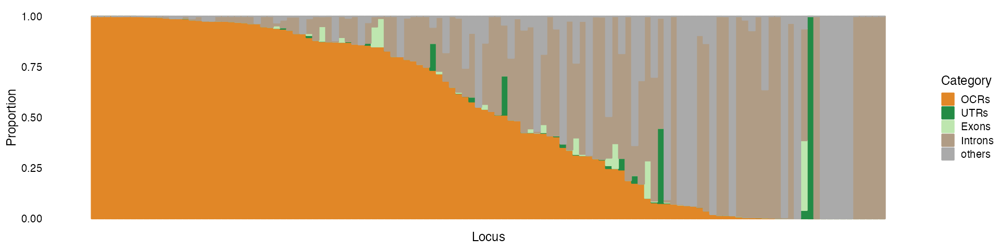
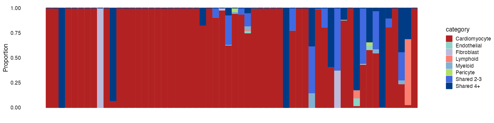

partition_pip_tutorial.RmdHere, we show an example using data from our heart single-cell study. We assigned the likely cell type(s) through which the causal variants act in each locus using fine-mapped SNPs, and cell-type specific open chromatin regions (OCRs).
Required input data:
Load R packages
Load fine-mapping summary statistics.
finemapstats <- readRDS(system.file("extdata", "aFib_Finemapped.tble.rds", package = "mapgen"))
finemapstats.gr <- process_finemapping_sumstats(finemapstats,
snp = 'snp', chr = 'chr',
pos = 'pos', pip = 'susie_pip',
pval = 'pval', zscore = 'zscore',
cs = 'CS', locus = 'locus',
pip.thresh = 1e-5)# Processing fine-mapping summary statistics ...
# Filter SNPs with PIP threshold of 1e-05We can partition PIPs into different functional annotation categories.
Load genomic annotations (hg19).
genomic.annots <- readRDS(system.file("extdata", "genomic.annots.hg19.gr.rds", package = "mapgen"))Load all OCRs (hg19).
genomic.annots$OCRs_hg19 <- readRDS(system.file("extdata", "OCRs.hg19.gr.rds", package = "mapgen"))Create a list of the annotations, with priority in the order of OCRs, UTRS, Exons, and Introns.
annots.list <- list(OCRs = genomic.annots$OCRs_hg19,
UTRs = genomic.annots$UTRs,
Exons = genomic.annots$exons,
Introns = genomic.annots$introns)Sum PIPs within annotation categories. Unlike partition_pip_regions(), it is OK to have overlapping annotations here. If a SNP is in multiple annotation categories, it will be assigned to the first ordered category.
sum_pip_res <- partition_pip_annots(finemapstats.gr, annots.list)Sum of PIPs in each annotation category:
sum.pips <- sum_pip_res$sum.pips
head(sum.pips)# OCRs UTRs Exons Introns others
# 7 7.680600e-01 0.000000000 0.000000e+00 0.2318394 0.0000000000
# 15 4.596813e-01 0.000000000 0.000000e+00 0.4912706 0.0489539561
# 25 4.968126e-03 0.001024686 1.507626e-05 0.9913449 0.0008067977
# 31 1.404386e-05 0.000000000 0.000000e+00 0.9996138 0.0000000000
# 32 5.370896e-01 0.000000000 0.000000e+00 0.2069662 0.2559185487
# 33 3.466723e-01 0.037586895 0.000000e+00 0.4991703 0.1165574597Number of SNPs included in each annotation category:
n.snps <- sum_pip_res$n.snps
head(n.snps)# OCRs UTRs Exons Introns others
# 7 8 0 0 14 0
# 15 23 0 0 15 31
# 25 20 2 1 93 17
# 31 1 0 0 11 0
# 32 2 0 0 39 36
# 33 18 1 0 144 30
colnames(sum.pips)[colnames(sum.pips) == "others"] <- "Intergenic"
sum.pips <- sum.pips[with(sum.pips, order(-OCRs, UTRs, Exons, Introns, Intergenic)),]
prop.pip.mat <- sum.pips/rowSums(sum.pips)We can make a structure plot to show the proportion of PIPs in each annotation category.
categories <- c("OCRs", "UTRs", "Exons", "Introns", "Intergenic")
colors <- c(OCRs = "#E18727FF", UTRs = "#238b45", Exons = "#bee6af", Introns = "#B09C85FF", Intergenic = "#aaaaaa")
dat <- compile_structure_plot_data(prop.pip.mat, categories = rev(categories))
structure_plot(dat, colors = rev(colors)) We can further partition PIPs into disjoint OCRs for different cell types.
Load cell type OCR peaks. This is a list of GRanges objects containing disjoint OCRs for different cell types.
disjoint_OCRs <- readRDS(system.file("extdata", "disjoint_OCRs_hg19.grlist.rds", package = "mapgen"))Sum PIPs within cell-type specific OCRs.
sum_pip_res <- partition_pip_regions(finemapstats.gr, disjoint_OCRs)Sum of PIPs in each cell type OCR category:
sum.pips <- sum_pip_res$sum.pips
head(sum.pips)# Cardiomyocyte Endothelial Fibroblast Lymphoid Myeloid Pericyte Shared 2-3
# 7 7.663085e-01 0.000000000 0.00000000 0 0 0 0.0000000000
# 15 2.173871e-01 0.004280965 0.08199708 0 0 0 0.0002198158
# 25 1.417186e-04 0.000000000 0.00000000 0 0 0 0.0037536142
# 31 1.404386e-05 0.000000000 0.00000000 0 0 0 0.0000000000
# 32 5.367133e-01 0.000000000 0.00000000 0 0 0 0.0000000000
# 33 7.847140e-02 0.000000000 0.00000000 0 0 0 0.0015118886
# Shared 4+
# 7 0.000000e+00
# 15 2.485050e-02
# 25 3.452405e-04
# 31 0.000000e+00
# 32 3.762834e-04
# 33 8.633893e-05Filter loci with a cutoff of total PIPs in OCR > 0.25, compute the proportion of PIPs partitioned in each cell type category.
sum.pips.filtered <- sum.pips[rowSums(sum.pips) > 0.25,]
prop.pip.mat <- sum.pips.filtered/rowSums(sum.pips.filtered)
prop.pip.mat <- prop.pip.mat[with(prop.pip.mat, order(-Cardiomyocyte)), ]We can make a structure plot to show the proportion of PIPs in each cell type category.
categories <- c("Cardiomyocyte", "Endothelial", "Fibroblast", "Lymphoid",
"Myeloid", "Pericyte", "Shared 2-3", "Shared 4+")
colors <- c("#b22222", "#8DD3C7", "#BEBADA", "#FB8072",
"#80B1D3", "#B3DE69", "royalblue", "#003C86")
dat <- compile_structure_plot_data(prop.pip.mat, categories = rev(categories))
structure_plot(dat, colors = rev(colors))